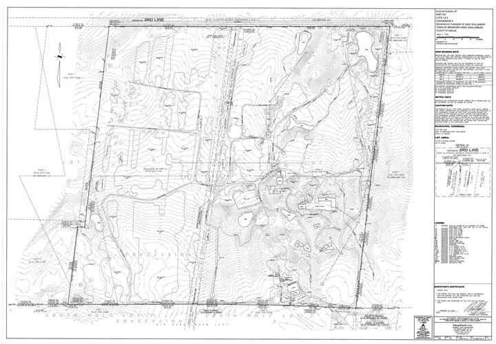

When you need it
Before design starts
- Your architect, designer or engineer has asked for a topo or an existing-conditions survey
- You are planning a new house, cottage, addition, septic system or shoreline work
- The municipality or conservation authority wants elevations on your application
- You need a tree inventory with locations and trunk diameters
- You are applying to the Committee of Adjustment for a minor variance
What you receive
A drawing your designer can work on
- Ground elevations and contours tied to a stated datum
- Buildings, driveways, walls, fences, trees and visible utilities
- Shoreline, watercourses and top and bottom of slopes where they apply
- The property boundaries, so setbacks can be measured from the real lines
- A PDF plan and a CAD file for your design team


A MeasEarth topographic survey with contours and site features. Select to enlarge.
Good to know
Tell us who it is for
Designers, engineers and municipalities each ask for slightly different things. If you send us their checklist or put us in touch, we can scope the survey once and avoid a second visit.
We collect the data with GNSS, total stations and, on larger or steeper sites, drones and 3D scanners. The method changes with the site; the accuracy your designer needs does not.
Buried utilities are not visible to a survey crew. Where the design needs them, we can arrange a locating firm and add their results to the drawing.
Common questions
Questions we hear most
Does a topographic survey include the boundaries?
Ours do, unless you ask otherwise. Designers need the true lot lines to measure setbacks and lot coverage.
What file formats do you provide?
A PDF plan and a CAD drawing. Tell us what software your designer uses and we will match it.
Can you also prepare the grading plan?
Yes. We prepare site plans and lot grading plans on our own survey, which saves a hand-off between firms.
Related
Often needed with this
Construction layout and certificates
Excavation staking, foundation pinning, gridlines and the foundation certificates your municipality requires.
Site plans and grading plans
Site plans and lot grading and drainage plans for building permits, drawn on an accurate survey.
Drone, 3D scanning and bathymetric surveys
Aerial mapping, orthophotos, 3D laser scanning, volumes and lake-bottom soundings.
Request a quote
Get a fixed-fee quote for your topographic survey
Tell us the property address and what you are planning. We reply with a written, fixed-fee proposal, so you know the price before any work starts.
- The property address or legal description
- What you are doing: buying, building, fencing, severing
- Any old survey or drawing you have (you can attach it on the contact page), and your deadline

Your project
No obligation. We use your details only to prepare the quote.
The form did not load. Please call 705 434 0411 and we will take the details by phone.